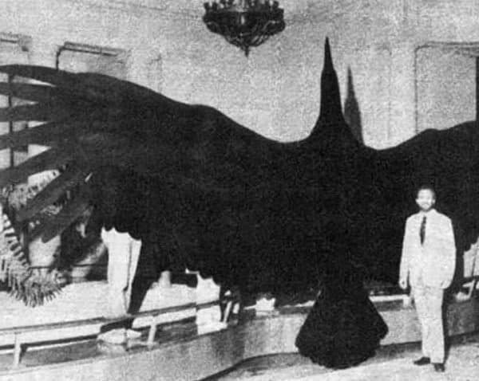

Этот удивительный вид, известный как «Величественная аргентинская птица»,
чей размах крыльев достигал 7-ми метров, является самой большой летающей птицей в истории.
Она жила около 6 миллионов лет назад в открытых равнинах Аргентины и в Андах. Птица является родственником
современных грифов и аистов, а ее перья достигали размера самурайского меча.